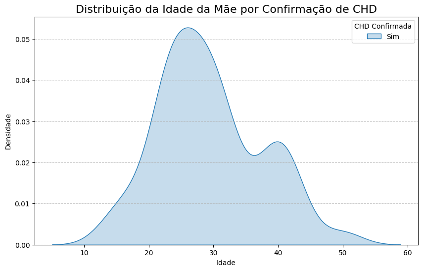
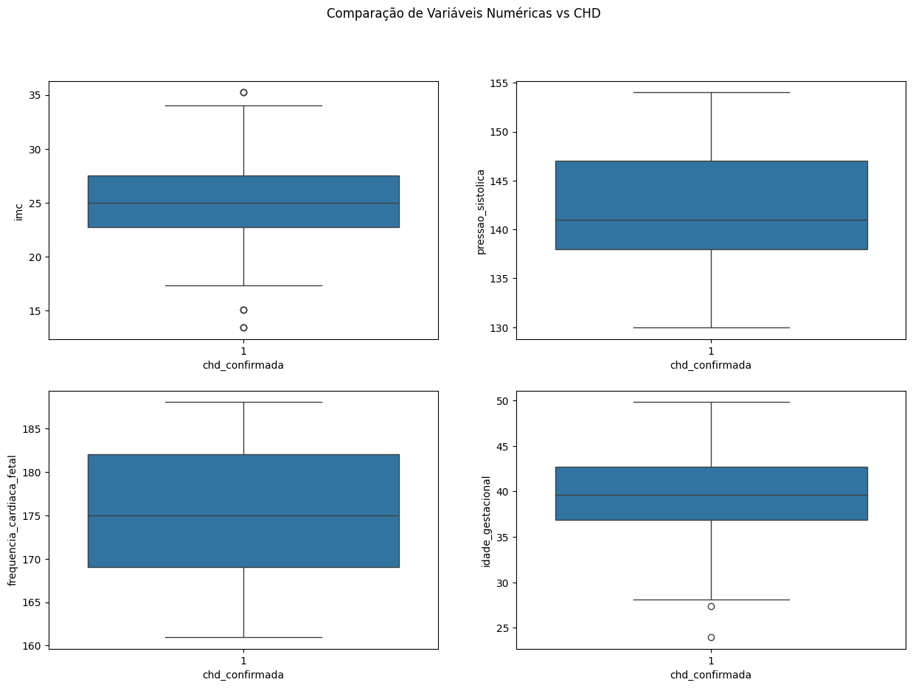
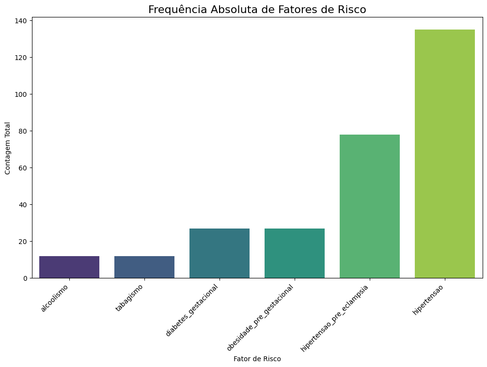
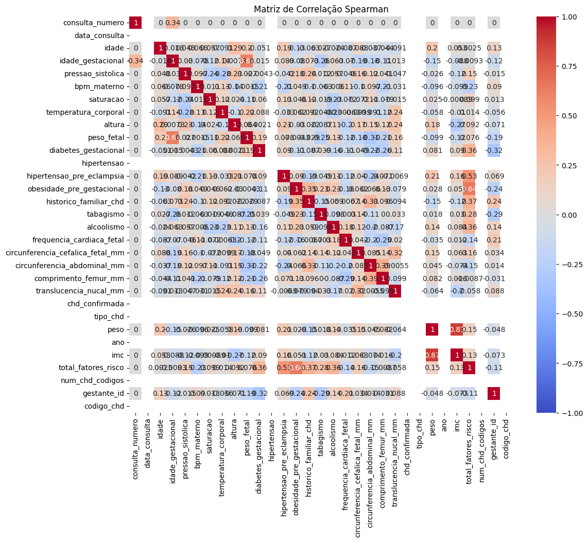
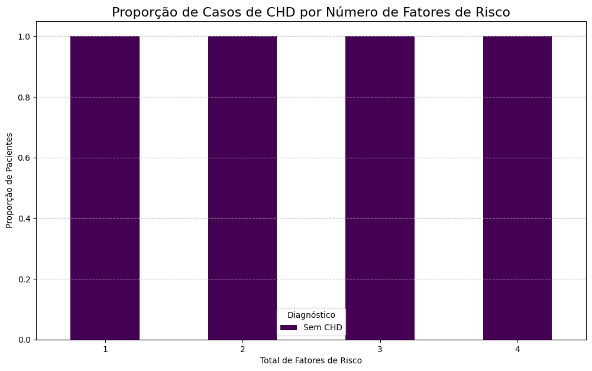
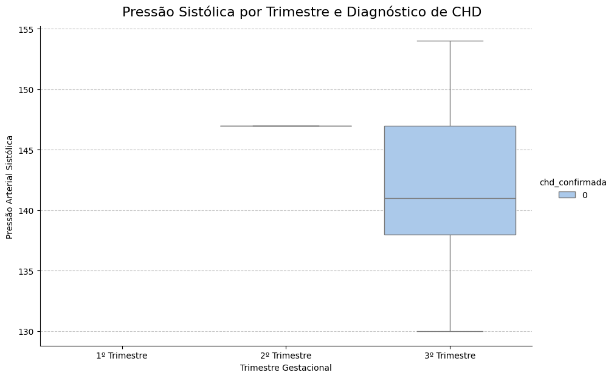
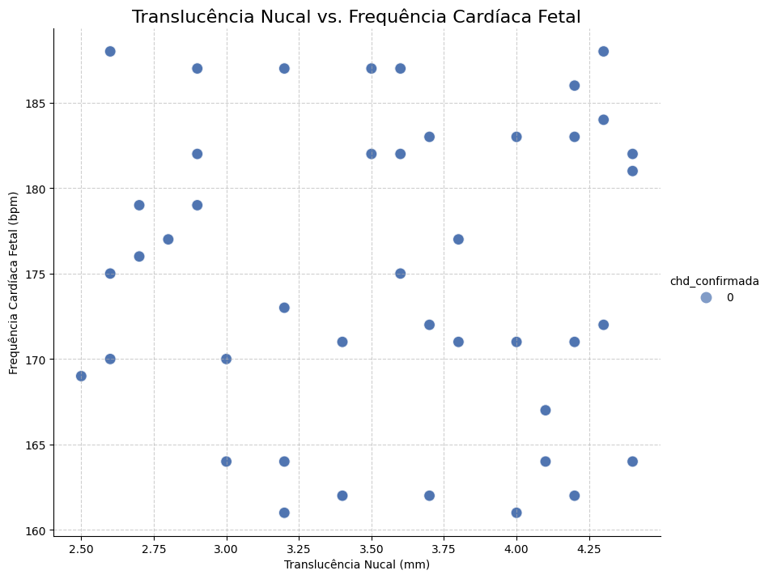

Relatório de Gráficos de Análise
Visualizações
Distribuição da Idade

Boxplots de Variáveis Numéricas vs CHD

Frequência de Fatores de Risco

Matriz de Correlação

Proporção de CHD por Total de Fatores de Risco

Análises Adicionais
Pressão Sistólica por Trimestre

Translucência Nucal vs. Frequência Cardíaca Fetal
